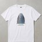

技能实习生5年失踪约3.6万人，仍有约6600人下落不明
3 条帖子，合计浏览 227 万次
每日新闻23日报道，2021到2025年共有约3.6万名技能实习生（在日本边工作边学技术的外国人）失踪，到今年5月仍有约6600人下落不明。数据来自出入国在留管理厅（主管入境和在留的政府机构）。Yahoo新闻把这条放进推荐话题，帖子获得1.2万个赞、约212万次浏览。
- 失踪规模
- 2021到2025年失踪的实习生合计约3.6万人，其中约6600人到今年5月还没找到。2025年全国失踪约3950人，比2023年高峰时的约9750人少。 每日新闻
- 来自哪里
- 2025年的失踪者里，越南人占六成多。印度尼西亚人和缅甸人各占约一成。 每日新闻
- 为何失踪
- 实习期间原则上不能换工作。低工资、拖欠加班费、暴力和骚扰等恶劣环境，被认为是失踪的主要原因。 每日新闻
- 制度概况
- 这项制度1993年设立，停留从1年起，满足条件最长可延到5年。今年6月在日实习生约45万人，批评者认为它实际上是在确保廉价劳动力。 每日新闻
- 下一步
- 国家将在2027年4月废除技能实习制度，改为新的“育成就劳制度”（以培养人才为目的的外国人就业制度）。满足日语能力等条件后，外国人可以更换接收企业。 每日新闻
担心下落不明的人被匿名流动型犯罪团伙拉去当打手，出事后得不到任何保障。
おむらいす
消费减税后的支援金，四口之家最高或年领27万日元
2 条帖子，合计浏览 203 万次
朝日新闻24日独家报道，政府正在研究“就业者负担减轻支援金”（按收入发给在职中低收入者的现金）2029年度正式实施后，给部分双职工、两个孩子的家庭每年最多发约27万日元。这项支援金和明年春天的食品消费税减税配套推出。X 上有人不满设收入限制、钱来自高收入者的税，两条相关帖子分别获得3700多和1400多个赞。
- 配套减税
- 政府计划从2027年4月起，把食品的消费税率从8%降到1%，为期2年。同时设立按个人发放、面向在职中低收入者的支援金。 朝日新闻
- 先行阶段
- 2027到2028年度先按每年约6000亿日元的规模发放，参考对象是年收入约100万到450万日元的人。每人每年最多约2.5万日元，每个孩子加5000日元，四口之家合计约6万日元。 朝日新闻
- 正式实施
- 2029年度起扩大规模，政府关系人士说考虑把上限提到每年约27万日元。政府内部估计每年要约2.7万亿日元。 朝日新闻
- 为何是27万
- 政府测算，四口之家的税和社保负担减去儿童补贴后，比美国、德国、法国最多重约27万日元。支援金的目标是填平这个差距。 朝日新闻
- 还没定
- 最终金额要看工资等经济形势和稳定财源能否确保。提交国会的法案没写具体对象和金额，在野党提出批评。 朝日新闻
仙台市长6天美国出差花约700万日元，遭市议员批评
1 条帖子，合计浏览 30.2 万次
东北放送（宫城县的电视台）报道，仙台市长郡和子23日结束4晚6天的美国出差回国，这次出差费用约700万日元。她过去3年出国出差11次，合计约6700万日元，部分市议员批评花费太高。一条转述这件事的帖子获得1.2万个赞、约30万次浏览。
- 出差目的
- 这次出差是为了纪念仙台和美国里弗赛德市结为姐妹城市70周年，市长访问了该市。 东北放送
- 市长说法
- 郡和子24日接受采访时说“到哪里都做了非常好的工作”。她认为为吸引游客到仙台和促进交流打下了基础。 东北放送
- 采访争议
- 出发当天她以安全为由一概不接受采访，有市议员批评她“逃避采访”。市里负责的职员说，不公开行程是为了市长安全和公务顺利，并没有拒绝采访。 东北放送
- 公开费用
- 市里将在官网公开这次出差的费用。仙台市议会也决定今后公开议员海外出差的费用，预计11月27日审议通过。 东北放送
补充来源：郡和子仙台市長700万円のアメリカ出張から帰国（东北放送，Yahoo新闻转载）
原帖オトイケ
列出这次约700万日元和过去3年11次约6700万日元的数字，质疑市长出差花这么多是否正常。
オトイケ
麻生集团混凝土厂未申报就改污水处理，污水排出厂外
1 条帖子，合计浏览 8.0 万次
福冈县企业集团麻生集团旗下生产预拌混凝土的麻生コンクリート工業，没有按水质污浊防止法向县里申报，就改变了工厂的污水处理方式，把部分污水排到厂外。福冈县13日进厂检查时确认了这件事，朝日新闻、读卖新闻等20日起报道。这家公司刚因掺入计划外的水泥被取消日本工业标准认证，一条转发朝日报道的帖子获得9000多个赞。
- 发生了什么
- 公司向县里申报的方式是沉淀处理后循环利用、不向外排水。实际上处理方式已经改变，一部分污水排到了工厂外。 朝日新闻、读卖新闻
- 设施问题
- 约50年前申报的设施早已废止，另建了新设施。县里还确认，公司没有申报就新建了生产预拌混凝土的设备。 读卖新闻、朝日新闻
- 县里调查
- 县里正在调查排水时有没有做必要的中和处理，也就是把碱性污水调成中性。县里要求公司详细报告经过和排水实况，并补交申报。 朝日新闻
- 六价铬
- 读卖新闻25日一篇报道的标题写道，公司对未申报排水表示“深刻反省”，并称“没有显示六价铬超过排水标准的记载”。六价铬是一种有毒的工业污染物。 读卖新闻
- 此前问题
- 公司被查出长期生产掺入计划外水泥的混凝土，认证机构11月9日取消了它的日本工业标准认证。福冈县和福冈市要求它报告用了这些混凝土的建筑和部位。国土交通大臣20日对此表示“遗憾”。 朝日新闻、读卖新闻
补充来源：麻生コンクリート 無届けで汚水処理変更、工場外排出 県が立ち入り（朝日新闻）、麻生コンクリート工業が汚水を工場外に排出…無届けで構造変更（读卖新闻，Yahoo
提到六价铬在自己那一代人的记忆里是令人震惊的污染物，没想到21世纪还会冒出这样的公害问题。
 iwata coffee
iwata coffee
政府拟要求避税方案推销者交出客户名单，拒绝将受罚
2 条帖子，合计浏览 12.2 万次
日经新闻24日报道，政府打算新设制度，让设计和销售避税方案的人向国税当局报告客户的姓名、住址等信息，拒绝报告将受到处罚。政府已向执政党税制调查会提出方案，目标是写进2027年度税制改革大纲。一家专做继承税的税理士法人（税务师事务所）转发时提醒，有人推荐节税方案时要先想想自己上名单行不行。
- 怎么运作
- 国税局长可以要求避税方案的推销者报告客户信息。对象是没有经济合理性、不当减少税负的交易。 日经新闻
- 处罚
- 推销者拒绝报告客户信息时，将受到处罚。 日经新闻
- 时间表
- 政府已把方案交给执政党税制调查会，目标是反映在2027年度税制改革大纲里。 日经新闻
- 此前讨论
- 政府税制调查会10月20日讨论过给避税指南者设罚则。本月4日，调查会又同意为税理士和金融机构制定防止逃避纳税的行为规范。 日经新闻
举出2022年最高法院的判例：一家人借钱买房产，把应税遗产从6亿多日元压到约2800万日元，最终被否认并追缴税款。
 税理士法人トゥモローズ
税理士法人トゥモローズ用讽刺故事说明，把旧木造公寓的建筑价值比例从三成抬到八成来多计折旧的做法，新制度下可能因客户名单交给国税而被追税。
 借・金太郎
借・金太郎
OpenAI预印本称矩阵乘法指数恰为2.25
2 条帖子，合计浏览 10.0 万次
OpenAI 美国时间24日在 GitHub 上的数学仓库发布预印本（未经同行评审的论文），声称证明了矩阵乘法指数在任何域（可以做加减乘除的数系）上都恰好是9/4，也就是2.25。这个指数衡量两个 n×n 矩阵相乘所需运算次数随 n 增长的速度，是计算机科学几十年来的难题。X 上一位研究者称之为“史上最疯狂的数学成果”，帖子获得1300多个赞。
- 结论
- 论文同时给出上界和与之吻合的下界。上界说明矩阵乘法可以用接近 n 的2.25次方的运算完成。下界说明任何形式算术电路都至少需要约 n 的2.25次方的一半次乘除运算。 AI Weekly
- 进步多大
- 此前最好的上界约为2.371，是今年8月得出的。加密货币媒体 CryptoBriefing 称这是1979年以来矩阵乘法界限的最大一次改进。 AI Weekly
- 来龙去脉
- OpenAI 10月2日的预印本只在复数上给出了上界，这次推广到所有域并补上了下界。论文以公司名义署名，没有列出个人研究者。 AI Weekly
- 局限
- 论文还没有经过评审。附带的 Lean（让电脑检查证明的编程语言）形式化证明范围比论文窄，不含除法运算，完整的机器验证还没完成。 AI Weekly
- 影响
- AI Weekly 认为，这对 GPU 上实际的矩阵运算短期内没有影响，但会改写今后复杂度研究的理论目标。 AI Weekly
帖子还说出现了线性规划的强多项式算法，这一说法没有找到报道证实。
 Pravesh K. Kothari
Pravesh K. Kothari
雅马哈为VOCALOID选秀节目宣传片道歉并下架
1 条帖子，合计浏览 15.2 万次
开发歌声合成软件 VOCALOID 的雅马哈（ヤマハ）24日在 VOCALOID 官方 X 账号道歉，承认20日公开的选秀节目“THE CREATE feat. VOCALOID”宣传片剪辑不当。节目要发掘新一代“ボカロP”（用 VOCALOID 写歌的创作者），宣传片突出参赛者“现在的 VOCALOID 歌其实不太有意思”这类挑衅发言，引来爱好者批评。雅马哈已把视频从 YouTube 撤下并删除宣传帖，转发道歉声明的帖子获得900多个赞。
- 道歉内容
- 雅马哈承认两点：视频剪辑不恰当，公开前没有充分向出演者确认。声明说责任全部在策划和制作节目的雅马哈。 雅马哈官方
- 批评什么
- 一是宣传片强调参赛者之间的对立和挑衅发言。二是给歌曲打分、层层淘汰的形式本身，网上有人说“音乐不是比赛”。 mediadogs
- 节目概况
- 节目原定12月4日起在 YouTube 官方频道播出，约1300人报名，14位通过歌曲审查的参赛者出演。主持人是搞笑组合霜降り明星的粗品，冠军可获100万日元活动资金。 mediadogs
- 保护出演者
- 雅马哈呼吁大家今后不要再直接向出演者发送严厉的意见。 雅马哈官方
- 下一步
- 截至24日没有宣布停播或延期。雅马哈说会听取评审和参赛者的意见再协商，最终由公司决定，方针确定后另行通知。 雅马哈官方、mediadogs
补充来源：ヤマハ、ボカロP発掘番組“THE CREATE”の告知動画を謝罪し削除（medi
原帖 魔窟の王
魔窟の王
房产账号续议豊海塔楼退定，有人提醒先查冷静期后续
34 条帖子，合计浏览 60.1 万次
之前的报道：11月25日早间“房产账号续贴降价，有人称非银行收紧塔楼贷款”
时间线上的房产账号还在讨论东京公寓降价，这次的焦点是湾岸新塔楼豊海タワー的买家会不会大量放弃定金。有用户做了判断该不该放弃定金的速查表，一位房产从业者提醒先确认能不能用冷静期（法定可以无条件解约的制度）。以下房源、成交和推测都来自个人账号的观察。
- 退定推演
- 有用户做了速查表，以第1期第1次的售价为基准，按之后各批次的涨价幅度给出放弃定金的推荐程度。还有用户说，从第1期第1次到竣工前涨价这么多，可能是史上第一次。 X 用户
- 冷静期
- 一位房产从业者说，卖方是持牌房产公司、买方是普通人，并且在咖啡馆、酒店大堂等卖方事务所以外的地方申购时，可能适用冷静期。没收到卖方书面告知的，在交房并付清全款前都能解约，定金全额退回。收到告知书的，从收到当天算起8天内可以书面解约，寄出即生效。 X 用户
- 降价挂牌
- 浜松町的ワールドタワーレジデンス一套约122平方米的两室户，从10亿日元分两次降到约8.3亿日元。パークコート北青山一套降了1亿日元，约17%。晴海クロノレジデンス一套20层两室户从1.15亿日元降到约1.1亿日元。 X 用户
- 品川入住
- 有用户引用港区住民统计称，港南3丁目10月1日到11月1日人口增加356人，家庭增加176户。另一位用户据此推测，新塔楼リビオタワー品川（共815户）实际交房约200户。 X 用户
- 郊外拿地
- 三菱UFJ信托银行的报告指出，建筑费上涨让开发商在八王子、所沢等郊外主要车站拿地的意愿下降。房产网站 IESHIL 认为，几年后“都心太贵就去郊外买”可能没那么容易。 三菱UFJ信托银行、IESHIL
快讯
日本
自民党宇宙厅提言的新细节：设想把内阁府事务局扩成100到150人的宇宙厅，并赋予对各省厅的劝告权。
CIPHER日经报道，民宿新规要求工作人员常驻，波及正在推进前台无人化的酒店。
 日本経済新聞 電子版
日本経済新聞 電子版Yahoo新闻推荐话题：政府计划明年秋天同时指定多个“副首都”（首都功能的备份城市）。
Yahoo!ニュース入管厅介绍数字游民签证：外国远程工作者最长可在日工作6个月，符合条件可带配偶和子女。
出入国在留管理庁国土交通省11月25日起在各地方整备局受理2027年度技术类社会人经验者的录用申请。
カズ国土交通省11月28日至29日办黑客松，用开放数据和生成式 AI 解决国土交通领域问题。
 Project LINKS
Project LINKSYahoo新闻推荐话题称排外谣言愈演愈烈，已有新学校计划因此被撤回。
 yu
yu47NEWS 速报：福冈的イオンモール福岡伊都25日下午正在疏散建筑内的顾客。
 47NEWS
47NEWS墨田区立花4丁目24日下午1点多有男子在停车场露阴，警方称嫌犯约40多岁、身高约170厘米。
墨田区危機管理丰田将在日本发售美国生产的新款凯美瑞，有用户称高配约520万日元，也能通过丰田的汽车订阅 KINTO 用车。
 マンションマニア
マンションマニア运营问答网站的オーケーウェブ以劝退方式裁员10人，约占18名员工的一半。
 久松剛
久松剛
科技和 AI
微软大故障新细节：Tom's Hardware 报道微软365故障期间，日本有员工改回用传真机。
 Ken J
Ken J有用户批评 T3 Code 作者 Theo 把中国开发者的改版叫作“Temu3 Code”，还威胁找 GitHub 封号。
 Jiacheng
Jiacheng有用户称 T3 Code 作者被 Obsidian 作者指出用了其开源代码后，宣布要闭源。
 Ding
Ding蓝点网称部分 ChatGPT Team 老账号重新出现5小时限额，不能在短时间集中用完周额度。
 蓝点网
蓝点网有用户转述 OpenAI 称 GPT-6 Cyber 在约120万美元的一次研究中验证了948个 Linux 内核提权漏洞。
小果果同一 Three.js 任务实测：GPT-6.2 Sol 约40分钟花3.26美元，Fable 5.2 两小时多花约74美元。
 Tony
TonyOpenCode Go 订阅用户可以用10美元买到价值60美元的 Kimi K3.1 Pro 用量。
 OpenCode
OpenCodeGoogle 正式推出 Workspace MCP 服务器和 Workspace CLI，内置防数据泄露检查和人工确认。
𝕋𝕠𝕔𝕪𝕦𝕜𝕚Sakana AI 发布30B 模型 Namazu Small，称25项测试平均胜过120B 模型，12月上旬公布本地部署方案。
 Sakana AI
Sakana AIChrome 团队案例：两家印度保险网站用面向智能体的开发者工具，把复杂页面开发从约4天缩到几小时。
 Hara Kazunari
Hara KazunariITmedia：约500名 BCG 顾问参与的研究比较了用和不用 AI 的能力差距，发表在 Nature 子刊。
ITmedia NEWSInstagram 的 AI 助手 Muse 可把收藏整理成合集或旅行行程，还能把食谱变成购物清单。
InstagramNASA 定下首艘核裂变动力深空飞船 SR-1 Freedom 的设计，计划2028年发射，验证核电推进。
 NASA
NASA英国《金融时报》报道，欧盟计划筹集最多500亿欧元，长期投资欧洲 AI 和量子计算企业。
Techmeme研究者 Daniel Johnson 加入 Thinking Machines，负责模型行为、性格和对齐。
 Daniel Johnson
Daniel JohnsonLangChain 公开内部销售智能体 GTM Agent 的构建过程，它能帮销售备会、写外联邮件和做报价。
 LangChain
LangChain《Effective Polars》第三版和配套课程上线，篇幅翻倍，新增用 uv 管理依赖和打包 Rust 扩展。
Matt Harrison论文 DfD-GS 利用散焦模糊，从单张图像估计真实尺度的深度并合成新视角，附项目页。
 Computer Vision and
Computer Vision and 论文 AVTR 提出带视觉想象的自适应多模态推理，附 Hugging Face 在线演示。
 AK
AKfreeCodeCamp 发布指南，讲数学的结构以及怎样把数学概念用到代码里。
 freeCodeCamp.org
freeCodeCamp.org有用户发现一篇强化学习文章称模型更会用工具，实际是框架代码写错导致工具调用失败。
 Ningcong Chen
Ningcong Chen有开发者让 AI 把 iOS 6 移植到一台原本跑 Android 2.3 的联发科 iPhone 4 仿制机上。
 Wenting
Wenting有开发者用50MHz 的 VexRiscv 处理器驱动自制 3dfx 显卡核心，跑起了游戏 GLtron。
Ian Hanschen有开发者做了一个放在屏幕边缘显示音名的 macOS 小应用。
 もっと
もっと有用户指出マイナビ的 IT 招聘页 HTML 不规范、无障碍差，还会劫持页面滚动。
debiruLingmo OS 是基于 Debian 的桌面 Linux 发行版，主打统一的界面风格。
howtopamP2P 路由软件 Orrery 新增节点文件热更新、限制引介数量和实时查看节点的命令。
Orrery Nodeホロラボ为 XR 眼镜 XREAL AURA 推出首款应用 torinome，有用户称它支持 Geospatial API。
 たぬ福
たぬ福AI 助理 Town 接入 Plaid，只读查看银行账户，每周提醒异常扣款和账单。
Kirsten GreenAndroid Studio Stingray 1 Canary 3 发布，修复 Gradle 插件问题和 K2 Lint 误报。
 Nicos Nicolaou
Nicos Nicolaou斯坦福 AI 实验室招博士后研究员，2027年1月4日前提交的申请会得到完整审核。
 Stanford AI Lab
Stanford AI LabFirebase 混合推理 AI 黑客松太平洋时间11月30日下午2点截止，总奖金3万美元。
FirebasePyTorch Day China 12月12日在北京举办，议程涵盖 vLLM、SGLang、DeepSeek 等。
 PyTorch
PyTorch12月13日有用 Codex 制作带 NFC 的圣诞贺卡工作坊，不需要编程经验。
Harry Ng青山学院大学明年4月开设跨学科的统计数据科学教学组织，与本田的对谈刊登在东洋经济。
 Ibuki Hoshina
Ibuki Hoshina
游戏
任天堂申请专利，或可让旧 Switch 在 Switch 2 接电视时充当 DS 和 3DS 游戏的下屏和手柄。
SWITCH速報Switch 2 破解新进展：有用户称 Switch 2 已能运行游戏备份，工具还没公开发布。
Sabuga有用户介绍一个开源客户端，可浏览和管理破解游戏重打包网站 FitGirl 的游戏。
Sabuga有开发者用 Rust 和 wgpu 重写老游戏依赖的 ddraw.dll，称平均比 cnc-ddraw 快约4倍。
 Delton Ding
Delton Ding老游戏 Ultimate No Mercy 已有93%的代码转成可读的 C++，并用随机测试与原版比对。
 Shady Night
Shady NightGIGAZINE：有人自制适配器，让海外版超级任天堂连上 Wi-Fi，可云存档和用生成式 AI。
 GIGAZINE
GIGAZINEXbox 官方：《使命召唤 Modern Warfare 4》正在打折。
 XBOX
XBOX《Ace Combat 8》第2赛季12月1日上线。
XBOX《MARVEL Tōkon》角色 Magik 的新造型可在太平洋时间11月30日前从游戏内新闻领取。
 PlayStation
PlayStation任天堂：《集合啦！动物森友会》（含 Switch 2 版）正在网络维护，预计16点左右结束。
任天堂サポートGitHub 的游戏开发比赛 Game Off 2026 还剩一周，现在报名开发仍来得及。
 GitHub
GitHub
钱和房产
经产省要求把经费一次性入账的“10万日元门槛”约30年来首次上调，争取写进2027年度税改。
すまほん!!海外亲属扶养扣除拟收紧，每人年汇款38万日元以上的条件将扩大到30岁以下和70岁以上。
小森さだゆき 高槻市議会議員一位补习班老板公开工资单：月薪约39万日元，公司实际负担约69万，员工到手约26万。
 塾経営24校舎
塾経営24校舎有外卖骑手称松屋在外卖平台和店内同价所以订单多，但外卖毛利约25%，外带约70%。
 つーしゃ
つーしゃ彭博社报道，日银前审议委员樱井认为政策利率可能在明年夏天前升到2%。
 マンション好きの外資コンサル
マンション好きの外資コンサルAnthropic 新进展：有用户称股价约80美元，比首日开盘价111.5美元低约28%。
 西村
西村有用户称软银资产多靠 Arm 和 OpenAI，Anthropic 下跌可能把它的负债资产比推向35%的危险线。
デューデリくん有用户称 Kioxia 本期预计净利约5万亿日元，市值约11万亿日元，预期市盈率约2倍。
 まみ
まみCoinbase CEO 称史上最大三宗上市都在2026年，主张用金融知识测试代替资产门槛开放私募投资。
Brian Armstrong币安称美股交易点差随 VIP 等级下降，从0.05%降到最低0.01%。
 Binance
Binance有用户列出黄金历次暴跌和回本时间，称2026年这次跌了37%。
 りおん
りおん有用户称美国约20亿日元以下遗产免税、中国没有继承税，批评日本继承税过重。
 リンゴ
リンゴMastercard 11月26日起在日本开展用 Apple Pay 触碰支付乘车和购物的优惠活动。
 David
David东京迪士尼运营商オリエンタルランド董事会24日决议回购并注销自家股票。
 エターナル総書記
エターナル総書記东京建物将投入约2700亿日元再开发涩谷站东口一带，2035年竣工。
 日経電子版 ビジネス
日経電子版 ビジネス约5.4万平方米的三菱UFJ银行池尻中心由户田建设承建，明年4月动工。
 日刊建設通信新聞社
日刊建設通信新聞社新宿区景观审议会将讨论新宿4丁目野村不动产大楼、旧 Alta 再开发和西新宿六丁目西第8地区。
 tm
tm文京区新的建筑指导纲要要求在商业和准工业地区建公寓时尽量在1楼设店铺。
 キットキャット
キットキャット财务小知识：越来越多公司在年度预算外做滚动预测，每月或每季更新未来12个月的预期。
Road to Banker
生活
有用户称从品川开车走普通道路约30分钟到 Costco 川崎，热狗加汽水180日元。

リビ夫
值得单独看的帖子
- LiteParse：本地极速解析PDF
LlamaIndex 开源的文档解析器，不用大模型和 API 就能在本机把 PDF、Office 文件转成 Markdown 或 JSON，自带 OCR。做 RAG 或知识库时可以直接 pip 安装试用。
 Jerry Liu，赞 21
Jerry Liu，赞 21 - 递归自我改进年度论文清单
整理了11篇关于让 AI 自己改进自己的论文，每篇用几句话说明要点，部分附代码。适合想了解怎样判断智能体是真变强还是在适应测试集的人收藏。
 Xudong Han，赞 175
Xudong Han，赞 175 - 回到神经元做可解释性
Anthropic 研究发现单个神经元的问题比想象中小，并用开放权重模型的神经元检测有害文本、引导行为、找出微调模型里的隐藏行为。两篇博客可直接读。
 Anthropic，赞 3,879
Anthropic，赞 3,879 - 过去一年大模型的三个拐点
Simon Willison 配合演讲视频写的长文，梳理过去12个月大模型的三个关键转折，适合了解 AI 工程的整体变化。
 Simon Willison，赞 121
Simon Willison，赞 121 - H-Net：直接从字节学语言
Albert Gu 团队新版分层网络不用分词器，在受控实验里效率提高3到5倍，用约十分之一的数据和算力追上一个11T token 训练的开源模型。
 Suwako — e，赞 45
Suwako — e，赞 45 - 8GB Jetson跑机器人大模型
PyTorch 官方技术文章，介绍用 Torch-TensorRT 和 ExecuTorch 让 3B 级机器人策略模型在 8GB Jetson Orin Nano 上运行，运行时不需要 PyTorch。
PyTorch，赞 57，含视频 - 广播积入门讲义幻灯片
松井研究室在名古屋大学“智能系统”课上讲广播积（broadcast product）入门时用的幻灯片，公开在 Speaker Deck，可以直接拿来自学。
 松井研，赞 0
松井研，赞 0 - 小型翻译模型的蒸留对比
PFN 实习生的技术博客，比较了用同系列大模型蒸留来提升小翻译模型的方法，成果用在了 PLaMo 3 Translate 的开发中。
 PFN Tech，赞 25
PFN Tech，赞 25 - 旗竿地差2厘米不能重建
整理一起东京地方法院判例：买家花约4580万日元买的二手独栋接路宽度差2厘米，书面已说明不能重建，口头说法被认为无据，买家败诉。买旧房前可以参考。
不動産セカンドオピニオン，赞 21 - Cursor规则文件合集
Awesome Cursor Rules 收录现成的 .mdc 规则文件，放进 .cursor/rules/ 就能让 AI 按所用框架的惯例写代码。
 GitHub Projects Comm，赞 49，含图
GitHub Projects Comm，赞 49，含图